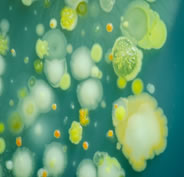

CIENCIA DIVERTIDA
¿QUÉ SON LOS MICROORGANISMOS?
Los microorganismos son aquellos seres vivos más diminutos que únicamente pueden ser apreciados a
través de un microscopio. En este extenso grupo podemos incluir a los virus, las bacterias, levaduras y
mohos que existen por el planeta tierra

EXISTEN MUCHOS MICROOGANISMOS COMO:
* los hongos microscópicos son generalmente unicelulares y se utilizan en la elaboración de panes, pizzas, queso y bebidas alcohólicas.